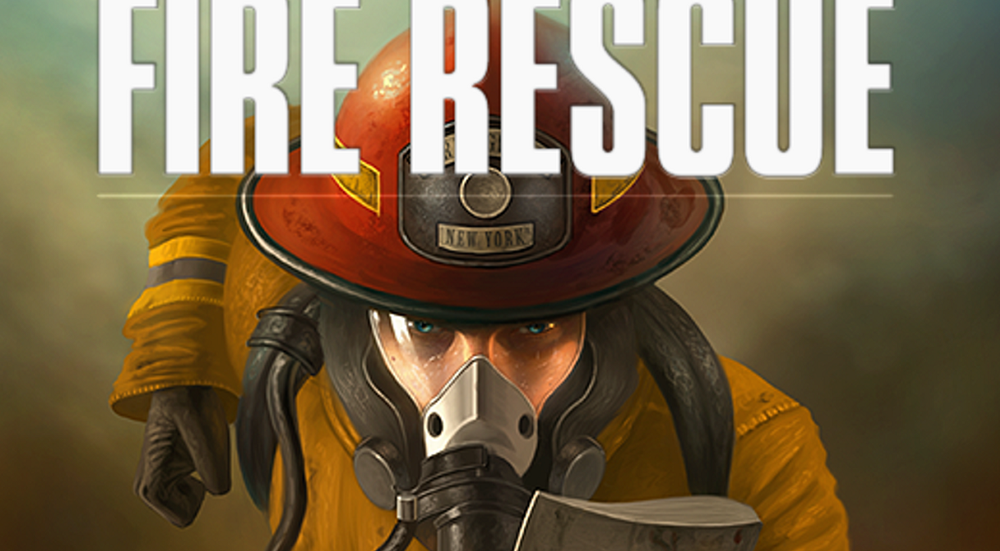

FlashPoint cooperation game
Develop a software engeneering project from star to finish with
use case model, enviromental model, protocol model up to the code and final product
This is an ungoing project that I am currently working on with a team of five since september that will
be finished by april of this year.
The goal is to reproduce the FlashPoint game, multi-player cooperative game where players must unite in order
to save victimes left in a building on fire, I learned how to think of software engeneering
projects developement process including producing models above to get a clear picture of the software developement
comming ahead. Beside the domain and sequence diagram that I had already learned in previous classes, I find the
use case model extremely powerful as it gives a clear understanding of the steps and outside architecture
that the system will have to take giving a dynamic perspective and practical perspective that is not
always present in the other models.
We are using java for the back end and the libgdx library for the GUI and thinking of using NodeJS for
the network aspect of the product.
I am responsible for developing the back end aspect of the game using the object oriented approach, I
find it very pleasing to finally get to apply design pattern in a concrete project!

Drug Insurance company DataBase
Design and deploy a database system
The project first consisted of developing the requierment specification for the database through the ER diagram. Then I
created the tables, views and meaningful SQL queries on our model. Finally I wrote an UI in python using the Tkinter
library to allow a user to add/delete data from the database along with getting visual results when performing SQL queries.
That experience gave me a better insights on how database are created and deployed in modern companies, along with team managment
since I ended up doing most of the project aspect as the project became more complex. In the future I think sessions where every group member
takes the time to present their work and the area that their contributions cover to other team member is a great asset when doing
such projects to ensure that no team member lags behind.
GitHub

Gravity
Stimulate plannetory orbits and basic data saving throuhg JSON strategies
This project was develop when applying for an internship in a company who focused on stimulation of systems.
This system was developed in python using the Tkinter library in python.
The goal was to be able to stimulate plannets interaction in the universe, the end results mimics that idea.
I also wanted to experiment with saving and loading data so I used JSON encoding to save planets and allow the user
to load saved planetory stimulation
This project thought me a lot regarding the use and intrecate understanding required when using librairies, in my case
I solve certain rendering problems and JSON saving problems by recreating or going arround certain methods provided by the librairies
which led to an interesing final code similar to abstract art in a sense. Note to self when using librairies make sure you understand there basics
before jumping into the code and try to make things work your way no matter what.
GitHub

Dongeon Crawler
First concrete use of I developed as part of a class project
The goal was to create a dongeonCrawler game in html using C or python for the back end, each team
had to code one room of the Dongeon, our challenge consisted on selecting a categorie and find the scrambled word
related to that category.
As my first project done in a team I must say that it went really well my partners and I had the same views over
how to code and displayed the same passion for the project so everything ran really smoothly through the developement phase.
I was responsible to design the game script, I decided to develop it in python as it was a new language to me at that time
and is easier to grasps with simpler librairies than C. To further challenge myself I used and external source to generate the game
encoded in a CSV format. The harder part of the developement was to transfer the information accross the python and C scripts
and render the html page with the correct informations. Overall it was a very interesting project that confirmed my interest
for software engeneering.
GitHub